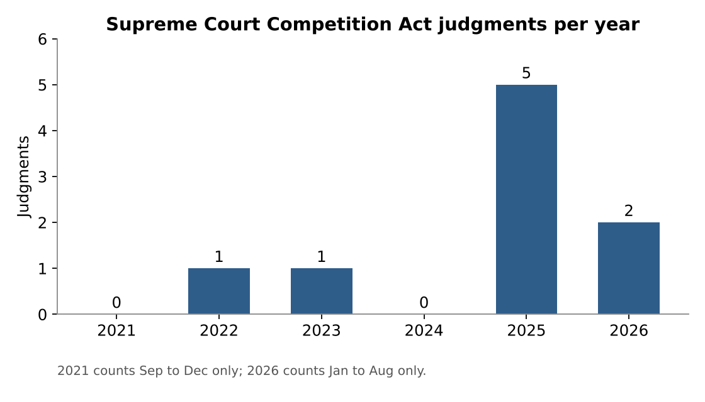
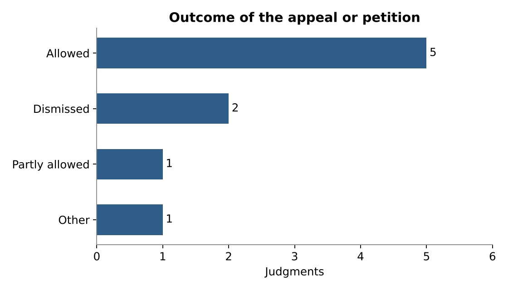
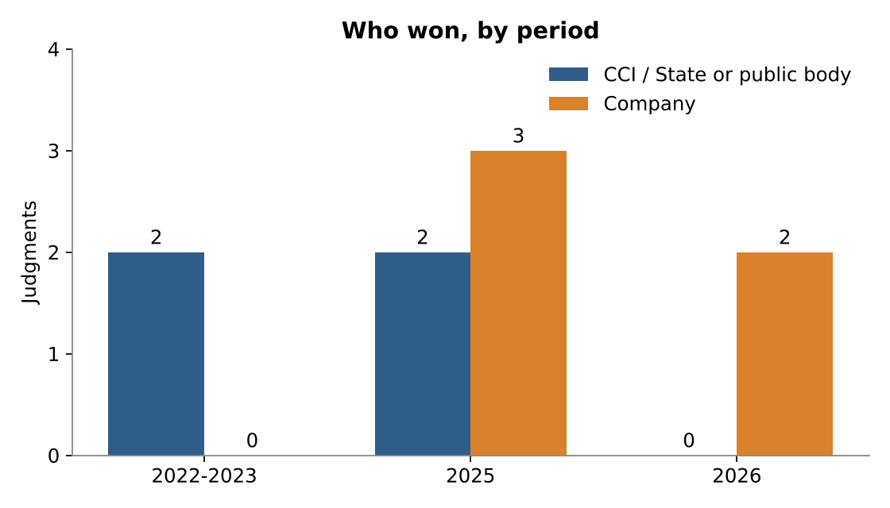

Competition law in the Supreme Court of India, 2021 to 2026
What we looked at
We collected every reasoned Supreme Court judgment or reasoned order decided under the Competition Act, 2002 between September 2021 and August 2026 that we could find, and coded each one for outcome, the party that brought the case, the party that won, the main provision and the precedent the Court leaned on. Short orders that only granted or refused a stay, or dismissed an appeal without reasons, were left out.
How the doctrine moved
2022 to 2023: can the CCI act at all? The first two cases were about reach. In CCI v. State of Mizoram the Court held that a lottery being res extra commercium does not shield bid rigging in lottery tenders. In Coal India v. CCI a three-judge bench held that a government company with a statutory monopoly is still an enterprise under the Act. Both times the CCI won and its jurisdiction grew.
2025: how must the CCI act? The busiest year turned to procedure and standards of proof. Independent Sugar Corporation made prior CCI approval of a combination mandatory before a CoC approves a resolution plan, and the review in May 2025 settled that a show cause notice under s 29(1) is compulsory while a DG reference is optional. Schott Glass asked the CCI to prove actual harm to competition before calling a rebate scheme abusive, and treated denial of cross-examination as fatal. Kerala Film Exhibitors went the other way on notice, holding that one show cause notice is enough before a penalty. Monsanto let a private settlement end a probe and left the Patents Act question open.
2026: limits on the regulator. Both 2026 rulings went against the CCI. Flipkart sent the case back because the NCLAT had relied on tax findings that no longer stood. Amazon held that s 45(2) is a penalty provision, not a power to reopen an approval, and that the CCI had acted outside the one-year window in s 20(1).
Read together, the cases show a move from questions of jurisdiction, where the CCI kept winning, to questions of fair procedure and proof, where companies did better. The Court has not cut back the CCI's reach, but it now asks more of the CCI's process.
Charts



The data
| # | Case | Date | Bench | Outcome | Who won | Provision | Holding | Source |
|---|---|---|---|---|---|---|---|---|
| 1 | Competition Commission of India v. State of Mizoram & Ors. | 19-01-2022 | 2 | Allowed | State or public body | s 3(3)(d) Competition Act | Yes. The lottery trade being regulated does not take collusive bidding outside the Act; the High Court order was set aside and the CCI inquiry continues. | Copy |
| 2 | Coal India Ltd. & Anr. v. Competition Commission of India & Anr. | 15-06-2023 | 3 | Other | State or public body | s 4 r/w s 2(h) Competition Act | It does. A government company with a statutory monopoly is an enterprise under the Act; the appeal was sent to be heard on its own merits. | Copy |
| 3 | Independent Sugar Corporation Ltd. v. Girish Sriram Juneja & Ors. | 29-01-2025 | 3 | Allowed | Company | proviso to s 31(4) IBC; s 29 Competition Act | Prior CCI approval is mandatory. The AGI Greenpac plan was set aside and the CoC was told to reconsider the plans. | Copy |
| 4 | Competition Commission of India v. Schott Glass India Pvt. Ltd. & Anr. | 13-05-2025 | 2 | Dismissed | Company | s 4 Competition Act | No abuse shown. Conduct must be judged by its actual effect on competition, and the DG probe was flawed because cross-examination was refused. | Copy |
| 5 | Competition Commission of India v. Independent Sugar Corporation Ltd. & Anr. (review) | 16-05-2025 | 3 | Allowed | State or public body | s 29 Competition Act | No. The notice under s 29(1) is mandatory, but a DG reference under s 29(1A) is the CCI's choice; paras 128-131 of the January judgment were replaced. | Copy |
| 6 | Competition Commission of India v. Monsanto Holdings Pvt. Ltd. & Ors. | 02-09-2025 | 2 | Dismissed | Company | s 26(1) Competition Act | Court refused to interfere with the Delhi HC order quashing the probe, as the settlement removed its basis; the Patents Act v. Competition Act question was kept open. | Copy |
| 7 | Competition Commission of India v. Kerala Film Exhibitors Federation & Ors. | 26-09-2025 | 2 | Allowed | State or public body | s 3(3)(b) r/w s 27 and s 48 Competition Act | One notice was enough and the penalty was proportionate. The CCI order, including the two-year bar on the office-bearers, was restored. | Copy |
| 8 | Flipkart India Pvt. Ltd. & Anr. v. Competition Commission of India & Ors. | 03-02-2026 | 3 | Partly allowed | Company | s 4 r/w s 26(1) Competition Act | NCLAT order set aside and the appeal sent back to the NCLAT to decide afresh whether a prima facie case exists, applying Coal India. | Copy |
| 9 | Amazon.com NV Investment Holdings LLC v. Competition Commission of India & Ors. | 27-05-2026 | 2 | Allowed | Company | s 45(2) r/w s 20(1) and s 31(1) Competition Act | No. s 45(2) is a penal provision, not a review power; the action was also out of time under s 20(1). CCI and NCLAT orders set aside and penalties to be refunded. | Copy |
Limits
Nine cases is a small sample. A change in who wins may reflect which parties chose to appeal, not a change in the Court's attitude, and two of the entries (Monsanto and Flipkart) are short reasoned orders rather than full judgments. The coding of "who won" is our own reading and other readers might code a remand differently.